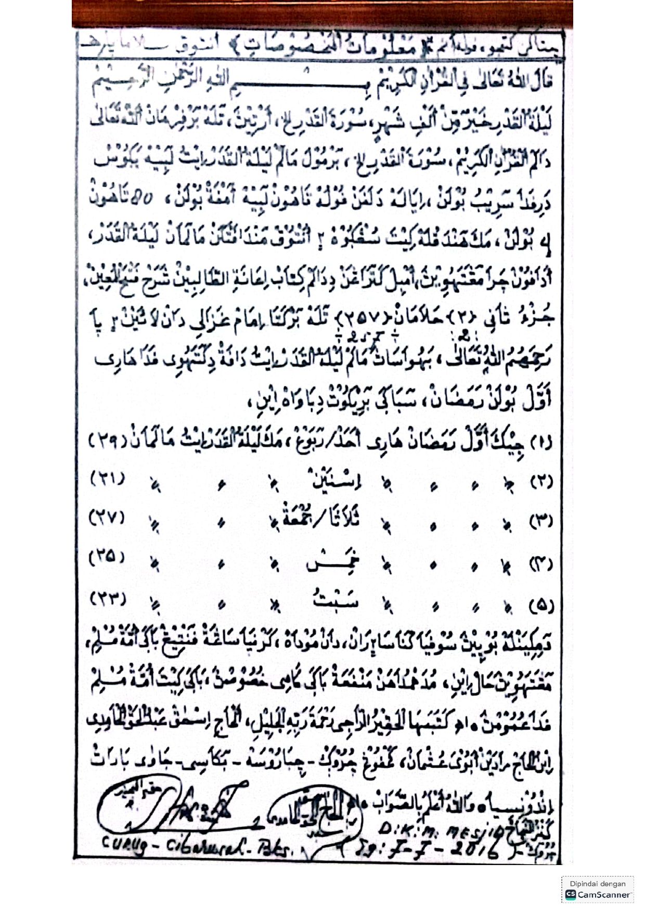

Di setiap lelah yang tak terlihat,
ada Allah yang tak pernah terlambat.
Di setiap doa yang kau ulang pelan-pelan,
Allah sedang menyiapkan jawaban.
Jangan takut pada dunia,
karena hatimu punya tempat pulang:
Karena di sana, resahmu menjadi tenang,
dan lelahmu berubah menjadi harap.
Di sana, air matamu bukan tanda kelemahan,
melainkan bahasa yang paling jujur di hadapan-Nya.
Jika langkahmu terasa berat,
itu hanya agar kau belajar bersandar.
Jika doamu belum juga nyata,
mungkin Allah sedang menguatkan hatimu terlebih dahulu.
Maka jangan berhenti mengetuk,
sebab pintu yang kau ketuk
adalah pintu Tuhan yang Maha Mendengar.
Berdoa lah
Tahlil Khusus
(٧) أَسْتَغْفِرُ اللهَ الْعَظِيْمَ
إِلَى حَضْرَةِ النَّبِيِّ الْمُصْطَفَى سَيِّدِنَا مُحمَّدٍ صَلَّى اللهُ عَلَيْهِ وَسَلَّمَ وَاٰلِهِ وَأَزْوَاجِهِ وَأَوْلَادِهِ وَذُرِّيَّاتِهِ الْفَــاتِحَةُ
ثُمَّ إِلَى حَضْرَةِ إِخْوَانِهِ مِنَ الْأَنْبِيَاءِ وَالْمُرْسَلِينَ وَالْأَوْلِيَاءِ وَالشُّهَدَاءِ وَالصَّالِحِينَ وَالصَّحَابَةِ وَالتَّابِعِينَ وَالْعُلَمَاءِ الْعَامِلِينَ وَالْمُصَنِّفِينَ الْمُخْلِصِينَ وَجَمِيعِ الْمَلَائِكَةِ الْمُقَرَّبِينَ، خُصُوصًا إِلَى سَيِّدِنَا الشَّيْخِ عَبْدِ الْقَادِرِ الْجِيلَانِي، وَخُصُوصًا إِلَى سَيِّدِنَا الشَّيْخِ أَبِي الْحَسَنِ الشَّاذِلِي، وَإِلَى حَضْرَةِ الشَّيْخِ كِيَاهِي الْحَاجِّ هَاشِمٍ أَشْعَرِي، وَإِلَى رُوحِ أَبِي الْحَاجِّ أَحْمَدَ قُسَاسِيه، وَإِلَى رُوحِ أُمِّي الْحَاجَّةِ سَلَامَةَ عَمِلِيَّة، وَإِلَى رُوحِ دَلْوَةَ حَسَنَة، وَإِلَى رُوحِ أَحْمَدَ نَاشِئٍ حَمِيد، وَإِلَى رُوحِ أَلْمَا أُمَيَّة، وَإِلَى رُوحِ سُنَانِ الْمَغْرِبِي، الْفَاتِحَةُ
ثُمَّ إِلَى جَمِيْعِ أَهْلِ الْقُبُوْرِ مِنَ الْمُسْلِمِيْنَ وَالْمُسْلِمَاتِ وَالْمُؤْمِنِيْنَ وَالْمُؤْمِنَاتِ مِنْ مَشَارِقِ الْأَرْضِ إِلَى مَغَارِبِهَا بَرِّهَا وَبَحْرِهَا خُصُوْصًا إِلَى اٰبَائِنَا وَأُمَّهَاتِنَا وَأَجْدَادِنَا وَجَدَّاتِنَا وَمَشَايِخِنَا وَمَشَايِخِ مَشَايِخِنَا وَأَسَاتِذَةِ أَسَاتِذَتِنَا وَلِمَنْ أَحْسَنَ إِلَيْنَا وَلِمَنِ اجْتَمَعْنَا هٰهُنَا بِسَبَبِهِ الْفَاتِحَةُ
ثُمَّ إِلَى جَمِيْعِ أهْلِ الْقُبُوْرِ مِمَّنْ ذُكِرَتْ أَسْمَاؤُهُ فِيْ هٰذِهِ الرِّسَالَةِ حَضْرَةِ رُوْحِ … وَحَضْرَةِ رُوْحِ … وَحَضْرَةِ رُوْحِ … رَحِمَهُمُ اللهُ وَغَفَرَهُمْ، الْفَاتِحَةُ
Bacaan Setelah Tahlil
الم
ذَٰلِكَ الْكِتَابُ لَا رَيْبَ فِيهِ ۛ هُدًى لِلْمُتَّقِينَ
الَّذِينَ يُؤْمِنُونَ بِالْغَيْبِ وَيُقِيمُونَ الصَّلَاةَ وَمِمَّا رَزَقْنَاهُمْ يُنْفِقُونَ
وَالَّذِينَ يُؤْمِنُونَ بِمَا أُنْزِلَ إِلَيْكَ وَمَا أُنْزِلَ مِنْ قَبْلِكَ وَبِالْآخِرَةِ هُمْ يُوقِنُونَ
أُولَٰئِكَ عَلَىٰ هُدًى مِنْ رَبِّهِمْ ۖ وَأُولَٰئِكَ هُمُ الْمُفْلِحُونَ
وَإِلَٰهُكُمْ إِلَٰهٌ وَٰحِدٌ ۖ لَّآ إِلَٰهَ إِلَّا هُوَ ٱلرَّحْمَٰنُ ٱلرَّحِيمُ
اللَّهُ لَا إِلَٰهَ إِلَّا هُوَ الْحَيُّ الْقَيُّومُ ۚ
لَا تَأْخُذُهُ سِنَةٌ وَلَا نَوْمٌ ۚ
لَهُ مَا فِي السَّمَاوَاتِ وَمَا فِي الْأَرْضِ ۗ
مَنْ ذَا الَّذِي يَشْفَعُ عِنْدَهُ إِلَّا بِإِذْنِهِ ۚ
يَعْلَمُ مَا بَيْنَ أَيْدِيهِمْ وَمَا خَلْفَهُمْ ۖ
وَلَا يُحِيطُونَ بِشَيْءٍ مِنْ عِلْمِهِ إِلَّا بِمَا شَاءَ ۚ
وَسِعَ كُرْسِيُّهُ السَّمَاوَاتِ وَالْأَرْضَ ۖ
وَلَا يَئُودُهُ حِفْظُهُمَا ۚ
وَهُوَ الْعَلِيُّ الْعَظِيمُ
لِلَّهِ مَا فِي السَّمَاوَاتِ وَمَا فِي الْأَرْضِ ۗ
وَإِنْ تُبْدُوا مَا فِي أَنْفُسِكُمْ أَوْ تُخْفُوهُ يُحَاسِبْكُمْ بِهِ اللَّهُ ۖ
فَيَغْفِرُ لِمَنْ يَشَاءُ وَيُعَذِّبُ مَنْ يَشَاءُ ۗ
وَاللَّهُ عَلَىٰ كُلِّ شَيْءٍ قَدِيرٌ
آمَنَ الرَّسُولُ بِمَا أُنْزِلَ إِلَيْهِ مِنْ رَبِّهِ وَالْمُؤْمِنُونَ ۚ
كُلٌّ آمَنَ بِاللَّهِ وَمَلَائِكَتِهِ وَكُتُبِهِ وَرُسُلِهِ ۚ
لَا نُفَرِّقُ بَيْنَ أَحَدٍ مِنْ رُسُلِهِ ۚ
وَقَالُوا سَمِعْنَا وَأَطَعْنَا ۖ
غُفْرَانَكَ رَبَّنَا وَإِلَيْكَ الْمَصِيرُ
لَا يُكَلِّفُ اللَّهُ نَفْسًا إِلَّا وُسْعَهَا ۚ
لَهَا مَا كَسَبَتْ وَعَلَيْهَا مَا اكْتَسَبَتْ ۗ
رَبَّنَا لَا تُؤَاخِذْنَا إِنْ نَسِينَا أَوْ أَخْطَأْنَا ۚ
رَبَّنَا وَلَا تَحْمِلْ عَلَيْنَا إِصْرًا كَمَا حَمَلْتَهُ عَلَى الَّذِينَ مِنْ قَبْلِنَا ۚ
رَبَّنَا وَلَا تُحَمِّلْنَا مَا لَا طَاقَةَ لَنَا بِهِ ۖ
وَاعْفُ عَنَّا وَاغْفِرْ لَنَا وَارْحَمْنَا ۚ
أَنْتَ مَوْلَانَا فَانْصُرْنَا عَلَى الْقَوْمِ الْكَافِرِينَ
سورة الإخلاص(٣)
قُلْ هُوَ اللَّهُ أَحَدٌ
اللَّهُ الصَّمَدُ
لَمْ يَلِدْ وَلَمْ يُولَدْ
وَلَمْ يَكُنْ لَهُ كُفُوًا أَحَدٌ
سورة الفلق
قُلْ أَعُوذُ بِرَبِّ الْفَلَقِ
مِنْ شَرِّ مَا خَلَقَ
وَمِنْ شَرِّ غَاسِقٍ إِذَا وَقَبَ
وَمِنْ شَرِّ النَّفَّاثَاتِ فِي الْعُقَدِ
وَمِنْ شَرِّ حَاسِدٍ إِذَا حَسَدَ
سورة الناس
قُلْ أَعُوذُ بِرَبِّ النَّاسِ
مَلِكِ النَّاسِ
إِلَٰهِ النَّاسِ
مِنْ شَرِّ الْوَسْوَاسِ الْخَنَّاسِ
الَّذِي يُوَسْوِسُ فِي صُدُورِ النَّاسِ
مِنَ الْجِنَّةِ وَالنَّاسِ
اللَّهُمَّ إِنِّي أَشْهَدُ أَنَّ الْفَضْلَ بِيَدِكَ، فَآتِنِي رِزْقِي بِسُهُولَةٍ بَيْنَ خَلْقِكَ، حَتَّىٰ تَشْهَدَ النَّاسُ عَجَائِبَ فَضْلِكَ، وَخَصِّصْنِي بِرَحْمَةٍ مِنْكَ تُنْجِينِي بِهَا مِنْ شَرِّ أَسْرَارِ خَلْقِكَ، وَاجْعَلْنِي مُطِيعًا لِشُكْرِكَ حَتَّىٰ أَفُوزَ فَوْزًا عَظِيمًا
Amalan ijazah Ramadhanسُورَةُ يسٓ ×1 يَا كَبِيرُ ×232 يَا لَطِيفُ ×99 يَا صَمَدُ ×36000 لَا إِلٰهَ إِلَّا ٱللّٰهُ ×70000 سُورَةُ ٱلْإِخْلَاصِ ×100000 خَتْمُ ٱلْقُرْآنِ ×5
Malam Lailatul Qodr